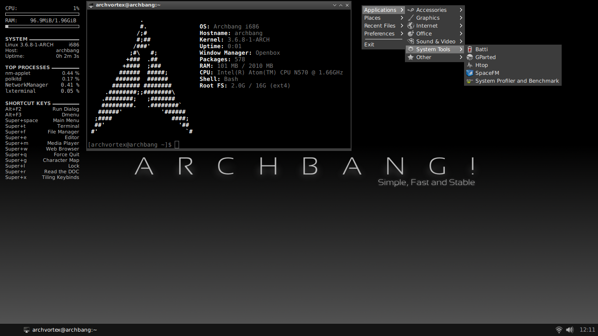

Hovercraft
An Alternative Slide Deck
by Kris Findlay
title slide
Who Am I ?
- Kris Findlay
- Involved in the IT Support Industry
- Krisilis IT Support
- Using Linux For Over 10 Years
Dont Talk about you too much
Currently
Archbang
an awesome distro .. bugger to update
LinuxMint

a great distro for new users includes all the main codecs etc..
What This is All About ?
- GUI Tools like Impress are lacking
- Prezi Style slides look cool
- We want something easy to use
- Something we can edit easily
- Automatic list no
- Cool effects
Can use any text editor hovercraft is written in python convert restructured text in html slides using impress.js
We Can Load Images
Move Horizontal
Move Vertical
Rotate
Zoom
As Well as 3D
this slide seems to have disapeared off the screen.
In
Many
Directions
Restructured Text
is used to create the slides
---- denotes a new slide
Restructured text is a markup language heavily used in the python sphinx documentation. doc utils is used to proccess the restructuredText
Titles
are created with underlineing the text
title ===== denotesg H1 title ----- denotes H2 title ..... denotes H3
titles levels cannot be skipped
Images
images are easy to include
.. image: img/logo.png
:width: 50px
:height: 50pxany images included in slides will be copied to output folder
Preformated Text
can be included by using a
::
indenting the textNotes
can be added to the rst file by
.. note::
inented text as noteadd more notes
Syntax Highlighting
def day_of_year(month, day): return (month -1) * 30 + day_of_month
code is highlighted using pygments supporting various laguages code cal also be run using manuel
Position Fields
fields starting with data- will be converted to impress.js attributes eg ..
data-x x-axis data-y y-axis data-z z-axis data-rotate rotation in degrees also data-rotate-x,y,z data-scale
positioning is abasalute by default. Relative is available by prepending value with "r" eg. r200px
Requirements
Pygments==1.6 configparser==3.3.0r2 docutils==0.10 hovercraft==1.2.dev0 lxml==3.1.0 svg.path==1.0b1 wsgiref==0.1.2
hovecraft can be installed with command
pip install hovercraft
Contact Me
Email : kris.findlay@krisilis.com twitter: azmodie Google Plus
Any Questions ?
hovercraft : https://github.com/regebro/hovercraft restructuredText : http://docutils.sourceforge.net/rst.html impressjs : https://github.com/bartaz/impress.js